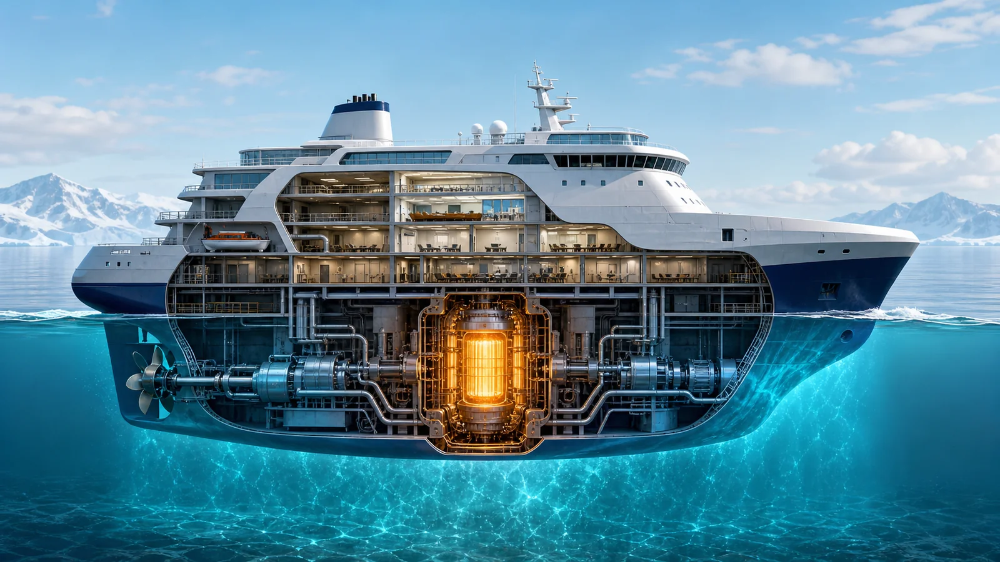
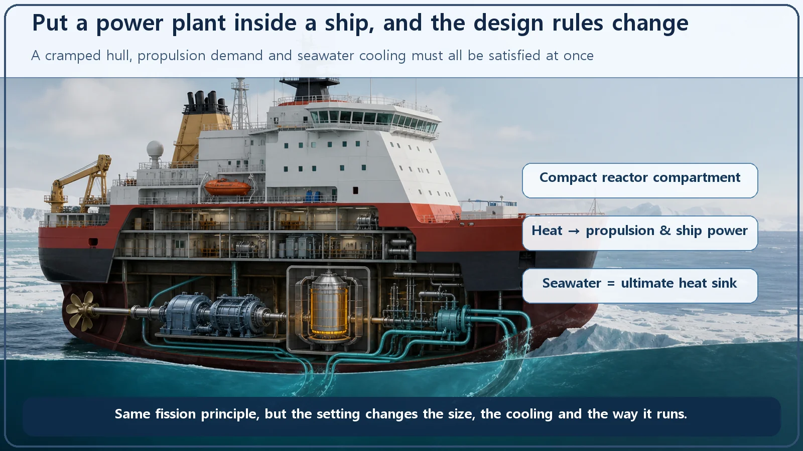
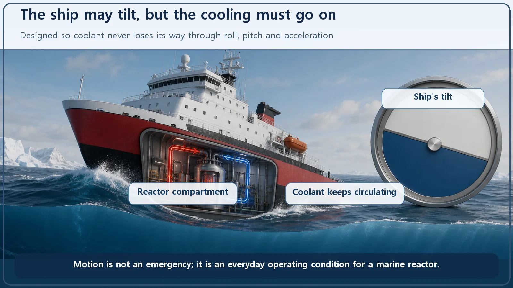

Reactor Types & Plant Systems · 185
What If You Put a Whole Power Plant on a Ship? — How Marine Reactors Differ from Land-Based Nuclear Plants
Same fission principle, different setting. Fitting a self-sufficient power plant into a cramped, moving ship changes its size, cooling and operation.

A marine reactor is a small, specially designed reactor that propels a ship and powers it, or runs a floating power plant. Every way it differs from a land-based plant follows from one condition: a power plant that must run on its own for a long time has to fit inside a cramped, moving ship. That means higher power density, cooling that works while rolling, seawater as the heat sink, frequent load changes and long-life cores.
A desktop and a laptop
Picture a big desktop computer on a desk. It's powerful, plugged into the wall, and takes up plenty of room. A laptop doing the same calculations lives differently: it's small, runs on a battery, and has to keep working on your knees in a swaying train. Same job, but where and how it's used is completely different, so its shape and its insides are different too.
Reactors are the same. If a huge nuclear power plant rooted on land is the desktop, a reactor tucked inside a ship roaming the seas is the laptop. Both make electricity (or propulsion) from the heat of fission, but because they sit in different environments, their size, cooling and operation all differ. Let's take apart exactly what makes a marine reactor different from the familiar land-based plant, and why.
What is a marine reactor, in a nutshell?
A marine reactor is a reactor specially designed to be small and to suit the cramped, moving conditions at sea, either to propel a vessel (a submarine, warship or icebreaker) and supply its onboard power, or to run a power plant floating on the water. On the other side is the land-based plant we usually picture: built solidly on a large site on solid ground, sending large amounts of electricity to the grid.
The root cause of every difference fits in one sentence: you have to fit a power plant that must run on its own for a long time inside a ship that is cramped and always moving. Every difference below follows from that one condition.

First, size: packing power into a tight space
The most visible difference is size. A large land-based plant has an electrical output of roughly 1,000–1,400 MW (it varies by design), and it spreads its systems comfortably across a large site. Inside a ship, space is tiny, so a marine reactor has to be much smaller.
That brings up a useful concept, power density, which you can write simply as:
Power density = power ÷ volume
Produce the same power in a smaller volume and the power density rises. Because a marine reactor must produce enough power to drive a ship from a cramped space, its power density tends to be higher than a land-based plant's. Think of packing a full meal into a small lunchbox without leaving a gap. And for handling all this stably in a small space, the pressurized water reactor design, which keeps water from boiling under high pressure, has the advantage, so most marine reactors belong to that family.
Second, it has to work while rocking
This is probably the most dramatic difference. A plant anchored to the ground (barring special cases such as earthquakes) stands still its whole life. A ship rolls from side to side and pitches forward and back in the waves, and every time it speeds up or slows down, inertia pushes everything one way or the other.
The trouble is that reactor cooling relies heavily on gravity. The classic example is natural circulation: heated water rises and cooled water sinks, so the flow drives itself. But when the ship tilts, the very idea of "up" and "down" shifts. So marine reactors are designed from the start with motion in mind, arranging piping, pumps and systems so that the coolant doesn't lose its way even when the ship tilts and rocks to a certain degree. It's like a special lunchbox built so the soup doesn't spill on a bumpy train.

Third, the whole ocean is the cooling-water supply
The heat a reactor produces must ultimately be released somewhere in nature. That final destination is called the ultimate heat sink. Land-based plants draw water from a river, build huge cooling towers, or construct large structures to pump in seawater.
And a ship? It's surrounded by sea. It can use the practically unlimited seawater right beside it as its ultimate heat sink. It starts out with far less to worry about when it comes to cooling water, like living in a place where the ground beneath your feet is all one big well.
Fourth, a different operating rhythm
Commercial land-based plants usually run steadily at constant output all day, serving as baseload that holds up the bottom of the grid. A ship docks, cruises, races at full speed, and changes speed constantly, and the power needed for propulsion goes up and down each time. So marine reactors are built to be good at raising and lowering output often and relatively quickly (load following). It's the difference between an express bus cruising at a steady speed and a taxi stopping and starting in city traffic.
One more thing: refueling a ship at sea is very difficult. So marine reactors aim for long-life cores that last a very long time on a single load of fuel, in contrast with land-based plants that replace fuel roughly every 1 to 2 years during maintenance outages.
To build a core that lasts long in a cramped space, marine reactors often use special fuel with higher enrichment than commercial plants (roughly 3–5%). The actual values vary widely by country and purpose, and much is not public, so we'll stop at "that tendency exists." This military use is presented here simply as fact, without taking any position.
Names that are easy to mix up
- Marine reactor ≠ floating nuclear power plant. Both involve the sea, but they differ. Marine reactors in the broad sense include propulsion reactors that move a vessel. A floating nuclear power plant is a generating facility that, rather than sailing under its own power, is floated or moored at sea to supply electricity to land, islands or offshore facilities. Russia's Akademik Lomonosov, for example, is a floating plant carrying two reactors that supplies about 70 MWe of electricity to a remote region.
- Marine reactor ≠ a land-based plant cooled by seawater. Some coastal land-based plants use seawater for cooling, but they are still land-based plants fixed to the ground. Using seawater doesn't make a reactor a marine reactor. The real dividing line is whether it is carried on a ship or offshore structure that moves or is moored.
- Marine reactor ≠ small modular reactor (SMR). Both give an impression of "small," but SMRs emphasize building in factory-made modules, while marine reactors emphasize the moving environment at sea. They focus on different things.
The one-line takeaways
- A marine reactor is a small, specially designed reactor for ship propulsion and power or for power generation at sea, suited to cramped, moving conditions. A land-based plant is a commercial power station fixed to the ground, sending large amounts of electricity to the grid.
- Every difference has one root: you must fit a power plant that runs on its own for a long time inside a cramped, moving ship.
- So marine reactors (1) are smaller with higher power density (mostly pressurized water reactors), (2) are designed to keep cooling while tilting and rocking, (3) use the surrounding seawater directly as their ultimate heat sink, (4) handle frequent load following as speed changes, and (5) aim for long-life cores to reduce refueling.
- The environment a reactor sits in changes its size, cooling and operation, which is a basic key to understanding why nuclear plants are designed and operated the way they are.
Just as a desktop and a laptop are both computers, land-based plants and marine reactors are two faces that branched from the same principle.